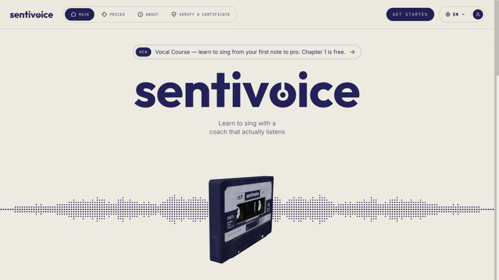

Live site screenshot · Oct 2026Sentivoice
A singing and performance coaching product that analyzes recordings and gives targeted feedback. Its audio mode measures pitch and key accuracy, timing, dynamics, vocal strain and expression. Its video mode adds stage presence, movement, audience connection and microphone technique. The AI coach turns results into practice exercises, with a vocal course for structured learning.
My role: technical co-founder. Product features are described from the live website; the specific systems I implemented are not itemized in the CV.